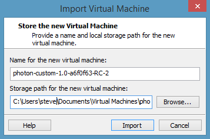

Photon OS Administration Guide
- Introduction
- Getting Started with Photon OS 2.0
- Quick Start for Photon OS 1.0
- Obtaining the ISO from Bintray and Creating a Photon OS VM in VMware Workstation
- Installing the OVA for the Minimal Version in vSphere
- Rapidly Deploying the Photon OS OVA in VMware Workstation 12 Pro
- Root Password Rules
- Permitting Root Login with SSH
- PXE Boot
- Kickstart
- Checking the Version and Build Number
- Tiny DNF for Package Management
- Managing Services with systemd
- Managing the Network
Configuration
- Using the Photon Management Daemon
- Using the Network Configuration Manager
- Use
ipandssCommands Instead ofifconfigandnetstat - Configuring Network Interfaces
- Setting a Static IP Address
- Turning Off DHCP
- Adding a DNS Server
- Setting Up Networking for Multiple NICs
- Combining DHCP and Static IP Addresses with IPv4 and IPv6
- Clearing the Machine ID of a Cloned Instance for DHCP
- Using Predictable Network Interface Names
- Inspecting the Status of Network Links with
networkctl - Turning on Network Debugging
- Mounting a Network File System
- Installing the Packages for tcpdump and netcat with tdnf
- Cloud-Init on Photon OS
- Docker Containers
- Kubernetes
- Installing Sendmail
- Changing the Locale
- The Default Security Policy of Photon OS
- Disabling TLS 1.0 to Improve Transport Layer Security
- Working with Repositories and Packages
- References
Introduction
This guide describes the fundamentals of administering Photon OS, the open-source minimalist Linux operating system from VMware that is optimized for cloud computing platforms, VMware vSphere deployments, and applications native to the cloud.
The guide covers the basics of managing packages, controlling services with systemd, setting up networking, initializing Photon OS with cloud-init, running Docker containers, and working with other technologies, such as Kubernetes. The guide also includes a section to get you started using Photon OS quickly and easily.
Photon OS is a Linux container host optimized for vSphere and cloud-computing platforms such as Amazon Elastic Compute and Google Compute Engine. As a lightweight and extensible operating system, Photon OS works with the most common container formats, including Docker, Rocket, and Garden. Photon OS includes a yum-compatible, package-based lifecycle management system called tdnf.
When used with development tools and environments such as VMware Fusion, VMware Workstation, HashiCorp (Vagrant and Atlas), and production runtime environments (vSphere, vCloud Air), Photon OS lets you seamlessly migrate container-based applications from development to production. With a small footprint and fast boot and run times, Photon OS is optimized for cloud computing and cloud applications.
There are two versions of Photon OS: a minimal version and a full version.
The minimal version of Photon OS is lightweight container host runtime environment best suited to managing and hosting containers. The minimal version contains just enough packaging and functionality to manage and modify containers while remaining a fast runtime environment. The minimal version is ready to work with appliances.
The full version of Photon OS includes additional packages to help you customize the system and create containerized applications. For running containers, the full version is excessive. The full version is targeted at helping you create, develop, test, and package an application that runs a container.
Two characteristics of Photon OS stand out: It manages services with systemd and it manages packages with an open source, yum-compatible package manager called tdnf, for Tiny DNF.
By using systemd, Photon OS adopts a contemporary Linux standard to manage system services. Photon OS bootstraps the user space and concurrently starts services with systemd. The systemctl utility controls services on Photon OS. For example, instead of running the /etc/init.d/ssh script to stop and start the OpenSSH server on a init.d-based Linux system, you run the following systemctl commands on Photon OS:
systemctl stop sshd
systemctl start sshd
Tdnf keeps the operating system as small as possible while preserving yum's robust package-management capabilities. On Photon OS, tdnf is the default package manager for installing new packages. It is a C implementation of DNF package manager.
Examining the Packages in the SPECS Directory on Github
The SPECS directory of the GitHub website for Photon OS contains all the packages that can appear in Photon OS repositories:
https://github.com/vmware/photon/tree/master/SPECS
To see the version of a package, in the SPECS directory, click the name of the subdirectory of the package that you want to examine, and then click the .spec filename in the subdirectory. For example, the version of OpenJDK, which contains the openjre package that installs the Java class library and the javac Java compiler, looks like this:
%define _use_internal_dependency_generator 0
Summary: OpenJDK
Name: openjdk
Version: 1.8.0.72
Release: 1%{?dist}
License: GNU GPL
URL: https://openjdk.java.net
Group: Development/Tools
Vendor: VMware, Inc.
Distribution: Photon
AutoReqProv: no
Source0: http://anduin.linuxfromscratch.org/files/BLFS/OpenJDK-%{version}/OpenJDK-%{version}-x86_64-bin.tar.xz
%define sha1 OpenJDK=0c705d7b13f4e22611d2da654209f469a6297f26
%description
The OpenJDK package installs java class library and javac java compiler.
%package -n openjre
Summary: Jave runtime environment
AutoReqProv: no
%description -n openjre
It contains the libraries files for Java runtime environment
#%global __requires_exclude ^libgif.*$
#%filter_from_requires ^libgif.*$...
...
Looking at the Differences Between the Minimal and the Full Version
The minimal version of Photon OS contains about 50 packages. As it is installed, the number of packages increases to nearly 100 to fulfill dependencies. The full version of Photon OS adds several hundred packages to those in the minimal version to deliver a more fully featured operating system.
You can view a list of the packages that appear in the minimal version by examining the following file:
https://github.com/vmware/photon/blob/master/common/data/packages_minimal.json
You can view a list of the packages that appear in the full version by examining the following file:
https://github.com/vmware/photon/blob/master/common/data/packages_full.json
If the minimal or the full version of Photon OS does not contain a package that you want, you can of course install it with tdnf, which appears in both the minimal and full versions of Photon OS by default. In the full version of Photon OS, you can also install packages by using yum.
One notable difference between the two versions of Photon OS pertains to OpenJDK, the package that contains not only the Java runtime environment (openjre) but also the Java compiler (javac). The OpenJDK package appears in the full but not the minimal version of Photon OS. To add support for Java programs to the minimal version of Photon OS, install the Java packages and their dependencies:
tdnf install openjdk
Installing:
openjre x86_64 1.8.0.92-1.ph1 95.09 M
openjdk x86_64 1.8.0.92-1.ph1 37.63 M
NOTE: openjdk and openjre are available as openjdk8 and openjre8 in Photon OS 2.0
A later section covers tdnf.
The Root Account and the sudo and su Commands
This guide assumes that you are logged in to Photon OS with the root account and running commands as root. The sudo program comes with the full version of Photon OS. On the minimal version, you must install sudo with tdnf if you want to use it. As an alternative to installing sudo on the minimal version, you can switch users as needed with the su command to run commands that require root privileges.
Getting Started with Photon OS 2.0
NOTE: This section applies to Photon OS 2.0 only.
To get started with Photon OS 2.0, refer to the installation instructions for your target environment:
- Running Photon OS on VMware vSphere
- Running Photon OS on VMware Fusion
- Running Photon OS on VMware Workstation
- Running Photon OS on Amazon EC2
- Running Photon OS on Google Compute Engine
- Running Photon OS on Microsoft Azure
Note: If you want to upgrade an existing Photon 1.0 VM, refer to the instructions in Upgrading to Photon OS 2.0.
Quick Start for Photon OS 1.0
NOTE: This section applies to Photon OS 1.0 only.
This section helps you get Photon OS up and running quickly and easily. There are several ways to deploy Photon OS for free within a matter of minutes:
- Obtain the ISO from Bintray and use it to create a virtual machine running Photon OS.
- Install the OVA for the minimal version of Photon OS in VMware vSphere.
- Rapidly deploy the OVA for the minimal version of Photon OS in VMware Workstation 12 Pro.
Obtaining the ISO from Bintray and Creating a Photon OS VM in VMware Workstation
The full version of Photon OS installs from an ISO in VMware Workstation and other hypervisors in a matter of minutes. Photon OS is a free download from the Bintray web site.
This section demonstrates how to create a virtual machine running Photon OS in VMware Workstation 12 Pro. If you are using a different hypervisor, the example set by this section should help you install it in your system. For instructions on how to install Photon OS from an ISO in VMware vSphere, see Installing Photon OS on VMware vSphere from an ISO Image.
Go to the following Bintray URL and download the ISO for the general availability release of Photon OS:
In VMware Workstation, type Ctrl+N to create a new virtual machine.
In the New Virtual Machine Wizard, select
Typical, and then clickNext.Select
Installer disk image file (iso), clickBrowseto locate the Photon OS ISO that you downloaded from Bintray, and then clickNext.For the guest operating system, select
Linux. From theVersiondrop-down menu, selectVMware Photon 64-bit. If you have an older version of VMware Workstation and Photon does not appear in the list, selectOther Linux 3.x kernel 64-bit.
Click
Nextthrough the remaining dialog boxes of the wizard, either accepting the default settings, which is recommended, or making the changes that you want, and then clickFinish.Power on the virtual machine and, in the Workstation window containing Photon, press Enter to start the installation.

During disk setup, the installer might ask you to confirm that this will erase the disk. If so, accept the default value of
yesby hitting your Enter key.Select the installation that you want. For this example, choose
Photon Fullby using the tab key to move to Photon Full and then hitting the space bar to select it. Press Enter to install it.Either accept the default hostname that Photon provides or type the name that you want. Press Enter to continue.
Type the root password. Photon OS requires the root password to be a complex string containing no common words or names.
The installation typically completes in about 150 seconds for the full version and in less than 30 seconds for the minimal version. After the installation finishes, boot the system and log in as root with your root password.
To connect to Photon OS by SSH, see the section on permitting root login with SSH below.
You can also build an ISO containing Photon OS from its source code on GitHub by following the instructions in the document on building Photon OS.
Installing the OVA for the Minimal Version in vSphere
You can download the OVA for the minimal version of Photon OS from Bintray and deploy it in vSphere in a matter of seconds. Here's how:
Download the OVA for the minimal version of Photon OS from the following URL:
https://bintray.com/vmware/photon/ova
To install the OVA in vSphere, on the File menu, click Deploy OVF Template, and then click Browse to locate the image that you downloaded. Move through the Deploy OVF Template dialog boxes by clicking Next to accept the default settings, and then click Finish.
In vSphere Client, turn on the power of the Photon OS virtual machine and open a console to it.
The default password for the root account is changeme, and you must change it when you first login. For security, Photon OS forbids common dictionary words for the root password.
There are other options for installing Photon OS in vSphere, such as building an ISO from the source code. For more information about the versions of Photon and their installation options, see Running Photon OS on vSphere.
Rapidly Deploying the Photon OS OVA in VMware Workstation 12 Pro
Here's how to rapidly deploy the OVA for Photon in VMware Workstation 12 Pro by using an up-to-date version of Firefox. The procedure in other browsers or another version of Workstation might be different.
In Firefox, download the OVA for the minimal version of Photon OS from this URL:
https://bintray.com/vmware/photon/ova
In the download dialog box, select Open with VMware Workstation (default), like this:

In the Workstation Import dialog box, click Import.

Workstation creates a virtual machine from the Photon OS OVA template in a few seconds. In Workstation, power on the virtual machine and log in as root with the initial password of changeme.
Photon OS then prompts you to change the root password.
Root Password Rules
When you first log on a new Photon OS machine, you must set the root password to a complex string containing no common words or names. Photon OS rejects a root password that contains simplistic patterns, common words, or words derived from the name of your account. The rules apply only to the root password, not other user and group accounts.
Permitting Root Login with SSH
The full version of Photon OS prevents root login with SSH by default. To permit root login over SSH, open /etc/ssh/sshd_config with the vim text editor and set PermitRootLogin to yes.
Vim is the default text editor available in both the full and minimal versions of Photon OS. (Nano is also in the full version.) After you modify the SSH daemon's configuration file, you must restart the sshd daemon for the changes to take effect. Example:
vim /etc/ssh/sshd_config
# override default of no subsystems
Subsystem sftp /usr/libexec/sftp-server
# Example of overriding settings on a per-user basis
#Match User anoncvs
# X11Forwarding no
# AllowTcpForwarding no
# PermitTTY no
# ForceCommand cvs server
PermitRootLogin yes
UsePAM yes
Save your changes in vim and then restart the sshd daemon:
systemctl restart sshd
You can then connect to the Photon OS machine with the root account over SSH:
steve@ubuntu:~$ ssh root@198.51.100.131
PXE Boot
Photon OS works with the Preboot Execution Environment, or PXE, to boot by retrieving software from a PXE server over a network connection. For instructions on how to set Photon OS to boot from a PXE server, see Network PXE Boot.
Kickstart
Photon OS supports kickstart for unattended installations through a CD-ROM or an HTTP server. On Photon OS, kickstart can set the hostname, password, run post-installation scripts, and add public keys for SSH. See Kickstart Support.
Checking the Version and Build Number
To check the version and build number of Photon OS, concatenate /etc/photon-release. Example:
cat /etc/photon-release
VMware Photon Linux 1.0
PHOTON_BUILD_NUMBER=a6f0f63
The build number in the results maps to the commit number on the VMware Photon OS GitHub commits page.
Tiny DNF for Package Management
On Photon OS, Tiny DNF, for Tiny Dandified Yum, is the default package manager for installing new packages. It is a C implementation of DNF package manager. The standard syntax for tdnf commands is the same as that for DNF:
tdnf [options] <command> [<arguments>...]
You can view its help information like this:
tdnf --help
tdnf -h
Photon OS 1.0 only: In the minimal version of Photon OS, tdnf serves as the sole package manager to streamline the operating system. The full version of Photon OS includes yum, a common utility that checks for, downloads, and automatically installs RPM packages. On the minimal version of Photon OS, you can install yum by using tdnf if you are unconcerned with the size of the operating system: tdnf install yum
Configuration Files and Repositories
The main configuration files reside in /etc/tdnf/tdnf.conf. The configuration file looks like this:
cat /etc/tdnf/tdnf.conf
[main]
gpgcheck=1
installonly_limit=3
clean_requirements_on_remove=true
repodir=/etc/yum.repos.d
cachedir=/var/cache/tdnf
The cache files for data and metadata reside in /var/cache/tdnf.
The repositories appear in /etc/yum.repos.d/ with .repo file extensions:
ls /etc/yum.repos.d/
lightwave.repo
photon-extras.repo
photon-iso.repo
photon-updates.repo
photon.repo
Note: Photon OS 1.0 (only) also includes the lightwave.repo.
You can list the the repositories by using the tdnf repolist command. Tdnf filters the results with enabled, disabled, and all. Running the command without specifying an argument returns the enabled repositories:
tdnf repolist
repo id repo name status
photon-updates VMware Photon Linux 2.0(x86_64)Updates enabled
photon-extras VMware Photon Extras 2.0(x86_64) enabled
photon VMware Photon Linux 2.0(x86_64) enabled
Note: Photon OS 1.0 (only) also includes the lightwave repository.
The photon-iso.repo, however, does not appear in the list of repositories because it is unavailable on the virtual machine from which these examples are taken. Photon-iso.repo is the default repository; it points to /media/cdrom. The contents of photon-iso.repo look like this:
cat /etc/yum.repos.d/photon-iso.repo
[photon-iso]
name=VMWare Photon Linux 2.0(x86_64)
baseurl=file:///mnt/cdrom/RPMS
gpgkey=file:///etc/pki/rpm-gpg/VMWARE-RPM-GPG-KEY
gpgcheck=1
enabled=0
skip_if_unavailable=True
The local cache is populated with data from the repository:
ls -l /var/cache/tdnf/photon
total 8
drwxr-xr-x 2 root root 4096 May 18 22:52 repodata
d-wxr----t 3 root root 4096 May 3 22:51 rpms
You can clear the cache to help troubleshoot a problem, but keep in mind that doing so might slow the performance of tdnf until the cache becomes repopulated with data. Here is how to clear the cache:
tdnf clean all
Cleaning repos: photon photon-extras photon-updates lightwave
Cleaning up everything
The command purges the repository data from the cache:
ls -l /var/cache/tdnf/photon
total 4
d-wxr----t 3 root root 4096 May 3 22:51 rpms
Options for Commands
You can add the following options to tdnf commands. If the option to override a configuration is unavailable in a command, consider adding it to the configuration file, /etc/tdnf/tdnf.conf.
OPTION DESCRIPTION
--allowerasing Allow erasing of installed packages to resolve dependencies
--assumeno Answer no for all questions
--best Try the best available package versions in transactions
--debugsolver Dump data aiding in dependency solver debugging info.
--disablerepo=<repoid> Disable specific repositories by an id or a glob.
--enablerepo=<repoid> Enable specific repositories
-h, --help Display help
--refresh Set metadata as expired before running command
--nogpgcheck Skip gpg check on packages
--rpmverbosity=<debug level name>
Debug level for rpm
--version Print version and exit
-y, --assumeyes Answer yes to all questions
-q, --quiet Quiet operation
Here is an example that adds the short form of the assumeyes option to the install command:
tdnf -y install gcc
Upgrading:
gcc x86_64 5.3.0-1.ph1 91.35 M
Commands
check: Checks for problems in installed and available packages for all enabled repositories. Command has no arguments. You can use --enablerepo and --disablerepo to control the repos used. Supported in Photon OS 2.0 (only).
check-local: This command resolves dependencies by using the local RPMs to help check RPMs for quality assurance before publishing them. To check RPMs with this command, you must create a local directory and place your RPMs in it. The command, which includes no options, takes the path to the local directory containing the RPMs as its argument. The command does not, however, recursively parse directories; it checks the RPMs only in the directory that you specify. For example, after creating a directory named /tmp/myrpms and placing your RPMs in it, you can run the following command to check them:
tdnf check-local /tmp/myrpms
Checking all packages from: /tmp/myrpms
Found 10 packages
Check completed without issues
check-update: This command checks for updates to packages. It takes no arguments. The tdnf list updates command performs the same function. Here is an example of the check update command:
tdnf check-update
rpm-devel.x86_64 4.11.2-8.ph1 photon
yum.noarch 3.4.3-3.ph1 photon
clean: This command cleans up temporary files, data, and metadata. It takes the argument all. Example:
tdnf clean all
Cleaning repos: photon photon-extras photon-updates lightwave
Cleaning up everything
distro-sync: This command synchronizes the machine's RPMs with the latest version of all the packages in the repository. Abridged example:
tdnf distro-sync
Upgrading:
zookeeper x86_64 3.4.8-2.ph1 3.38 M
yum noarch 3.4.3-3.ph1 4.18 M
Total installed size: 113.01 M
Reinstalling:
zlib-devel x86_64 1.2.8-2.ph1 244.25 k
zlib x86_64 1.2.8-2.ph1 103.93 k
yum-metadata-parser x86_64 1.1.4-1.ph1 57.10 k
Total installed size: 1.75 G
Obsoleting:
tftp x86_64 5.2-3.ph1 32.99 k
Total installed size: 32.99 k
Is this ok [y/N]:
downgrade: This command downgrades the package that you specify as an argument to the next lower package version. Example:
tdnf downgrade boost
Downgrading:
boost x86_64 1.56.0-2.ph1 8.20 M
Total installed size: 8.20 M
Is this ok [y/N]:y
Downloading:
boost 2591470 100%
Testing transaction
Running transaction
Complete!
To downgrade to a version lower than the next one, you must specify it by name, epoch, version, and release, all properly hyphenated. Example:
tdnf downgrade boost-1.56.0-2.ph1
erase: This command removes the package that you specify as an argument. Example:
tdnf erase vim
Removing:
vim x86_64 7.4-4.ph1 1.94 M
Total installed size: 1.94 M
Is this ok [y/N]:
You can also erase multiple packages:
tdnf erase docker cloud-init
info: This command displays information about packages. It can take the name of a package. Or it can take one of the following arguments: all, available, installed, extras, obsoletes, recent, upgrades. Examples:
tdnf info ruby
tdnf info obsoletes
tdnf info upgrades
install: This command takes the name of a package as its argument. It then installs the package and its dependencies. Examples:
tdnf install kubernetes
You can also install multiple packages:
tdnf install python-curses lsof audit gettext chkconfig ntsysv bindutils
wget gawk irqbalance lvm2 cifs-utils c-ares distrib-compat
list: This command lists the packages of the package that you specify as the argument. The command can take one of the following arguments: all, available, installed, extras, obsoletes, recent, upgrades.
tdnf list updates
The list of packages might be long. To more easily view it, you can concatenate it into a text file, and then open the text file in a text editor:
tdnf list all > pkgs.txt
vi pkgs.txt
makecache: This command updates the cached binary metadata for all known repositories. Example:
tdnf makecache
Refreshing metadata for: 'VMware Lightwave 1.0(x86_64)'
Refreshing metadata for: 'VMware Photon Linux 1.0(x86_64)Updates'
Refreshing metadata for: 'VMware Photon Extras 1.0(x86_64)'
Refreshing metadata for: 'VMware Photon Linux 1.0(x86_64)'
Metadata cache created.
provides: This command finds the packages that provide the package that you supply as an argument. Examples:
tdnf provides docker
docker-1.11.0-1.ph1.x86_64 : Docker
Repo : photon
docker-1.11.0-1.ph1.x86_64 : Docker
Repo : @System
reinstall: This command reinstalls the packages that you specify. If some packages are unavailable or not installed, the command fails. Example:
tdnf reinstall docker kubernetes
Reinstalling:
kubernetes x86_64 1.1.8-1.ph1 152.95 M
docker x86_64 1.11.0-1.ph1 57.20 M
Total installed size: 210.15 M
remove: This command removes a package. When removing a package, tdnf by default also removes dependencies that are no longer used if they were was installed by tdnf as a dependency without being explicitly requested by a user. You can modify the dependency removal by changing the clean_requirements_on_remove option in /etc/tdnf/tdnf.conf to false.
tdnf remove packagename
search: This command searches for the attributes of packages. The argument can be the names of packages, as this example testifies:
tdnf search docker kubernetes
docker : Docker
docker : Docker
docker-debuginfo : Debug information for package docker
docker : Docker
kubernetes : Kubernetes cluster management
kubernetes : Kubernetes cluster management
kubernetes-debuginfo : Debug information for package kubernetes
kubernetes : Kubernetes cluster management
The argument of the search command can also be a keyword or a combination of keywords and packages:
tdnf search terminal bash
rubygem-terminal-table : Simple, feature rich ascii table generation library
ncurses : Libraries for terminal handling of character screens
mingetty : A minimal getty program for virtual terminals
ncurses : Libraries for terminal handling of character screens
ncurses : Libraries for terminal handling of character screens
bash : Bourne-Again SHell
bash-lang : Additional language files for bash
bash-lang : Additional language files for bash
bash : Bourne-Again SHell
bash-debuginfo : Debug information for package bash
bash : Bourne-Again SHell
bash-lang : Additional language files for bash
upgrade: This command upgrades the package or packages that you specify to an available higher version that tdnf can resolve. If the package is already the latest version, the command returns Nothing to do. Example:
tdnf upgrade boost
Upgrading:
boost x86_64 1.60.0-1.ph1 8.11 M
Total installed size: 8.11 M
Is this ok [y/N]:y
Downloading:
boost 2785950 100%
Testing transaction
Running transaction
Complete!
You can also run the upgrade command with the refresh option to update the cached metadata with the latest information from the repositories. The following example refreshes the metadata and then checks for a new version of tdnf but does not find one, so tdnf takes no action:
tdnf upgrade tdnf --refresh
Refreshing metadata for: 'VMware Lightwave 1.0(x86_64)'
Refreshing metadata for: 'VMware Photon Linux 1.0(x86_64)Updates'
Refreshing metadata for: 'VMware Photon Extras 1.0(x86_64)'
Refreshing metadata for: 'VMware Photon Linux 1.0(x86_64)'
Nothing to do.
upgrade-to: This command upgrades to the version of the package that you specify. Example:
tdnf upgrade-to ruby2.3
The commands and options of tdnf are, at present, a subset of those of dnf. For more help with tdnf commands, see the DNF documentation.
Adding a New Repository
With Photon OS, you can add a new repository from which tdnf installs packages. To do so, you create a repository configuration file with a .repo extension and place it in /etc/yum.repos.d. The repository can be on either the Internet or a local server containing your in-house applications.
Be careful if you add a repository that's on the Internet: Installing packages from untrusted or unverified sources might put the security, stability, or compatibility of your system at risk. It might also make your system harder to maintain.
On Photon OS, the existing repositories appear in /etc/yum.repos.d:
ls /etc/yum.repos.d/
lightwave.repo
photon-extras.repo
photon-iso.repo
photon-updates.repo
photon.repo
Looking at one of the .repo files reveals the format and information that a new repository configuration file should contain:
cat /etc/yum.repos.d/lightwave.repo
[lightwave]
name=VMware Lightwave 1.0(x86_64)
baseurl=https://dl.bintray.com/vmware/lightwave
gpgkey=file:///etc/pki/rpm-gpg/VMWARE-RPM-GPG-KEY
gpgcheck=1
enabled=1
skip_if_unavailable=True
The minimal information needed to establish a repository is an ID and human-readable name of the repository and its base URL. The ID, which appears in square brackets, must be one word that is unique amoung the system's repositories; in the example above, it is [lightwave].
The baseurl is a URL for the repository's repodata directory. For a repository on a local server that can be accessed directly or mounted as a file system, the base URL can be a file referenced by file://. Example:
baseurl=file:///server/repo/
The gpgcheck setting specifies whether to check the GPG signature. The gpgkey setting furnishes the URL for the repository's ASCII-armored GPG key file. Tdnf uses the GPG key to verify a package if its key has not been imported into the RPM database.
The enabled setting tells tdnf whether to poll the repository. If enabled is set to 1, tdnf polls it; if it is set to 0, tdnf ignores it.
The skip_if_unavailable setting instructs tdnf to continue running if the repository goes offline.
Other options and variables can appear in the repository file. The variables that go with some of the options can reduce future changes to the repository configuration files. There are variables to replace the value of the version of the package and to replace the base architecture. For more information, see the man page for yum.conf on the full version of Photon OS: man yum.conf
Here is an example of how to add a new repository for a local server that tdnf polls for packages:
cat > /etc/yum.repos.d/apps.repo << "EOF"
[localapps]
name=Local In-House Applications(x86_64)
baseurl=file:///appserver/apps
enabled=1
skip_if_unavailable=True
EOF
Because this new repository resides on a local server, make sure the Photon OS machine can connect to it by, for instance, mounting it.
After establishing a new repository, you must run the following command to update the cached binary metadata for the repositories that tdnf polls. Example:
tdnf makecache
Refreshing metadata for: 'VMware Lightwave 1.0(x86_64)'
Refreshing metadata for: 'VMware Photon Linux 1.0(x86_64)Updates'
Refreshing metadata for: 'VMware Photon Extras 1.0(x86_64)'
Refreshing metadata for: 'Local In-House Applications(x86_64)'
Refreshing metadata for: 'VMware Photon Linux 1.0(x86_64)'
Metadata cache created.
Adding the Dev Repository to Get New Packages from the GitHub Dev Branch
If you want to try out new packages or the latest versions of existing packages as they are merged into the dev branch of the Photon OS GitHub site, you can add the dev repository to your repository list. Here's how:
On your Photon OS machine, run the following command as root to create a repository configuration file named photon-dev.repo, place it in /etc/yum.repos.d, and concatenate the repository's information into the file:
cat > /etc/yum.repos.d/photon-dev.repo << "EOF"
[photon-dev]
name=VMware Photon Linux Dev(x86_64)
baseurl=https://dl.bintray.com/vmware/photon_dev_$basearch
gpgkey=file:///etc/pki/rpm-gpg/VMWARE-RPM-GPG-KEY
gpgcheck=1
enabled=1
skip_if_unavailable=True
EOF
After establishing a new repository, you must run the following command to update the cached binary metadata for the repositories that tdnf polls:
tdnf makecache
Managing Services with systemd
Photon OS manages services with systemd. By using systemd, Photon OS adopts a contemporary Linux standard to bootstrap the user space and concurrently start services--an architecture that differs from traditional Linux systems such as SUSE Linux Enterprise Server.
A traditional Linux system contains an initialization system called SysVinit. With SLES 11, for instance, SysVinit-style init programs control how the system starts up and shuts down. Init implements system runlevels. A SysVinit runlevel defines a state in which a process or service runs.
In contrast to a SysVinit system, systemd defines no such runlevels. Instead, systemd uses a dependency tree of targets to determine which services to start when. Combined with the declarative nature of systemd commands, systemd targets reduce the amount of code needed to run a command, leaving you with code that is easier to maintain and probably faster to execute. For an overview of systemd, see systemd System and Service Manager and the man page for systemd.
On Photon OS, you should manage services with systemd and its command-line utility for inspecting and controlling the system, systemctl, not the deprecated commands of init.d.
The following sections present a brief overview of useful systemctl commands and options for examining and managing the state of systemd services. For more information, see the index of all the systemd man pages, including systemctl, at the following URL:
https://www.freedesktop.org/software/systemd/man/
Viewing Services
To view a description of all the active, loaded units, execute the systemctl command without any options or arguments:
systemctl
To see all the loaded, active, and inactive units and their description, run this command:
systemctl --all
To see all the unit files and their current status but no description, run this command:
systemctl list-unit-files
The grep command filters the services by a search term, a helpful tactic to recall the exact name of a unit file without looking through a long list of names. Example:
systemctl list-unit-files | grep network
org.freedesktop.network1.busname static
dbus-org.freedesktop.network1.service enabled
systemd-networkd-wait-online.service enabled
systemd-networkd.service enabled
systemd-networkd.socket enabled
network-online.target static
network-pre.target static
network.target static
Controlling Services
To control services on Photon OS, you use systemctl. For example, instead of running the /etc/init.d/ssh script to stop and start the OpenSSH server on a init.d-based Linux system, you run the following systemctl commands on Photon OS:
systemctl stop sshd
systemctl start sshd
The systemctl tool includes a range of commands and options for inspecting and controlling the state of systemd and the service manager; for more information, see the systemctl man page.
Creating a Startup Service
This section shows you how to create a systemd startup service that changes the maximum transmission unit, or MTU, of the default Ethernet connection, eth0.
First, concatenate the following block of code into a file:
cat << EOF >> /lib/systemd/system/eth0.service
[Unit]
Description=Network interface initialization
After=local-fs.target network-online.target network.target
Wants=local-fs.target network-online.target network.target
[Service]
ExecStart=/bin/ifconfig eth0 mtu 1460 up
Type=oneshot
[Install]
WantedBy=multi-user.target
EOF
Second, set the service to auto-start when the system boots:
cd /lib/systemd/system/multi-user.target.wants/
ln -s ../eth0.service eth0.service
Disabling the Photon OS httpd.service
If your application or appliance includes its own HTTP server, you should turn off and disable the HTTP server that comes with Photon OS so that it does not conflict with your own HTTP server.
To stop it and disable it, run the following commands as root:
systemctl stop httpd.service
systemctl disable httpd.service
Auditing System Events with auditd
Because Photon OS emphasizes security, the Linux auditing service, auditd, is enabled and active by default on the full version of Photon OS:
systemctl status auditd
* auditd.service - Security Auditing Service
Loaded: loaded (/usr/lib/systemd/system/auditd.service; enabled; vendor preset: enabled)
Active: active (running) since Fri 2016-04-29 15:08:50 UTC; 1 months 9 days ago
Main PID: 250 (auditd)
CGroup: /system.slice/auditd.service
`-250 /sbin/auditd -n
To help improve security, the auditd service can monitor file changes, system calls, executed commands, authentication events, and network access. After you implement an audit rule to monitor an event, the aureport tool generates reports to display information about the events.
You can, for instance, use the auditctl utility to set a rule that monitors the sudoers file for changes:
auditctl -w /etc/sudoers -p wa -k sudoers_changes
This rule specifies that the auditd service watch (-w) the /etc/sudoers file to log permissions changes (p) to the write access (w) or attributes (a) of the file and to identify them in logs as sudoers_changes. The auditing logs appear in /var/log/audit/audit.log. You can list the auditing rules like this:
auditctl -l
-w /etc/sudoers -p wa -k sudoers_changes
For more information on the Linux Audit Daemon, see its man page on Photon OS:
man auditd
For more information on setting auditing rules and options with auditctl, see its man page:
man auditctl
For more information on viewing reports on audited events, see the aureport man page:
man aureport
Analyzing systemd Logs with journalctl
The journalctl tool queries the contents of the systemd journal. For help troubleshooting systemd, two journalctl queries are particularly useful: showing the log entries for the last boot and showing the log entries for a systemd service unit.
This command displays the messages that systemd generated during the last time the machine started:
journalctl -b
This command reveals the messages for only the systemd service unit specified by the -u option, which is auditd in the following example:
journalctl -u auditd
For more information, see the journalctl man page by running this command on Photon OS: man journalctl
Migrating Scripts to systemd
Although systemd maintains compatibility with init.d scripts, you should, as a best practice, adapt the scripts that you want to run on Photon OS to systemd to avoid potential problems. Such a conversion standardizes the scripts, reduces the footprint of your code, makes the scripts easier to read and maintain, and improves their robustness on a systemd system.
Managing the Network Configuration
The network service, which is enabled by default, starts when the system boots. You manage the network service by using systemd commands, such as systemd-networkd, systemd-resolvd, and networkctl. You can check its status of the network service by running the following command:
systemctl status systemd-networkd
Here is a healthy result of the command:
* systemd-networkd.service - Network Service
Loaded: loaded (/usr/lib/systemd/system/systemd-networkd.service; enabled; vendor preset: enabled)
Active: active (running) since Fri 2016-04-29 15:08:51 UTC; 6 days ago
Docs: man:systemd-networkd.service(8)
Main PID: 291 (systemd-network)
Status: "Processing requests..."
CGroup: /system.slice/systemd-networkd.service
`-291 /lib/systemd/systemd-networkd
Because Photon OS relies on systemd to manage services, you should employ the systemd suite of commands, not deprecated init.d commands or other deprecated commands, to manage networking.
Using the Photon Management Daemon
The Photon Management Daemon (PMD) that ships with Photon OS 2.0 provides the remote management of a Photon instance via several APIs: a command line client (pmd-cli), a REST API, and a Python API. The PMD provides the ability to manage network interfaces, packages, firewalls, users, and user groups.
Installing the pmd Package
The pmd package is included with your Photon OS 2.0 distribution. To make sure that you have the latest version, you can run:
# tdnf install pmd
# systemctl start pmd
Available APIs
pmd-cli
The pmd-cli utility enables Photon customers to invoke API requests securely on local and remote servers. For details, see Photon Management Daemon Command-line Interface (pmd-cli).
PMD REST API
The PMD REST API is an openapi 2.0 specification. Once the pmd package is installed, you can use a Swagger UI tool to browse the REST API specifications (/etc/pmd/restapispec.json). You can also browse it using the copenapi_cli tool that comes with the pmd package:
# copenapi_cli --apispec /etc/pmd/restapispec.json
For more information about the copenapi_cli tool, refer to github.com/vmware/copenapi.
PMD Python API
Python3 is included with your Photon OS 2.0 distribution. PMD Python interfaces are available for python3 (pmd-python3) and python2 (pmd-python2). You can use tdnf to ensure that the latest version is installed:
# tdnf install pmd-python3
# systemctl start pmd
To navigate the help documentation for the pmd Python packages:
# python3
>>> import pmd
>>> net = pmd.server().net
>>> help(pmd)
To show help text for individual interfaces:
>>> help(pmd.server().net)
>>> help(pmd.server().pkg)
>>> help(pmd.server().firewall)
>>> help(pmd.server().user)
For details about the network commands, see also the Network Configuration Manager - Python API.
PMD C Documentation
PMD C APIs are defined in the header files (pmd_fwmgmt.h, pmd_netmgr.h, pmd_pkgmgmt.h, pmd_usermgmt.h) that are stored in the following location:
[https://github.com/vmware/pmd/tree/master/include](https://github.com/vmware/pmd/tree/master/include)
For details about the network commands, see also the Network Configuration Manager - C API.
Using the Network Configuration Manager
The Network Configuration Manager library that ships with Photon OS 2.0 provides a collection of C, Python, and CLI APIs that simplify common onfiguration tasks for:
- interfaces
- IP addresses (IPv4 and IPv6 addresses)
- routes
- DNS server and domain settings
- DHCP DUID and IAID settings
- NTP server settings
- service management
- object parameters (interfaces and files)
For additional details, see:
- CLI - see the
-netcommands in the Photon Management Daemon Command-line Interface (pmd-cli) - C APIs - Network Configuration Manager - C API
- Python APIs - Network Configuration Manager - Python API
Use ip and ss Commands Instead of ifconfig and netstat
Although the ifconfig command and the netstat command work on Photon OS, VMware recommends that you use the ip or ss commands. The ipconfig and netstat commands are deprecated.
For example, instead of running netstat to display a list of network interfaces, run the ss command. Similarly, to display information for IP addresses, instead of running ifconfig -a, run the ip addr command. Examples:
USE THIS IPROUTE COMMAND INSTEAD OF THIS NET-TOOL COMMAND
ip addr ifconfig -a
ss netstat
ip route route
ip maddr netstat -g
ip link set eth0 up ifconfig eth0 up
ip -s neigh arp -v
ip link set eth0 mtu 9000 ifconfig eth0 mtu 9000
Using the ip route version of a command instead of the net-tools version often provides more complete, accurate information on Photon OS, as the following example demonstrates:
ip neigh
198.51.100.2 dev eth0 lladdr 00:50:56:e2:02:0f STALE
198.51.100.254 dev eth0 lladdr 00:50:56:e7:13:d9 STALE
198.51.100.1 dev eth0 lladdr 00:50:56:c0:00:08 DELAY
arp -a
? (198.51.100.2) at 00:50:56:e2:02:0f [ether] on eth0
? (198.51.100.254) at 00:50:56:e7:13:d9 [ether] on eth0
? (198.51.100.1) at 00:50:56:c0:00:08 [ether] on eth0
Configuring Network Interfaces
Network configuration files for systemd-networkd reside in /etc/systemd/network and /usr/lib/systemd/network. Example:
root@photon-rc [ ~ ]# ls /etc/systemd/network/
99-dhcp-en.network
By default, when Photon OS starts, it creates a DHCP network configuration file, or rule, which appears in /etc/systemd/network, the highest priority directory for network configuration files with the lowest priority filename:
cat /etc/systemd/network/99-dhcp-en.network
[Match]
Name=e*
[Network]
DHCP=yes
Network configuration files can also appear in the system network directory, /usr/lib/systemd/network, as the results of the following search illustrate:
root@photon-rc [ ~ ]# updatedb
root@photon-rc [ ~ ]# locate systemd/network
/etc/systemd/network
/etc/systemd/network/99-dhcp-en.network
/usr/lib/systemd/network
/usr/lib/systemd/network/80-container-host0.network
/usr/lib/systemd/network/80-container-ve.network
/usr/lib/systemd/network/99-default.link
root@photon-rc [ ~ ]#
As you can see, the /usr/lib/systemd/network directory contains several network configuration files. Photon OS applies the configuration files in the lexicographical order specified by the file names without regard for the network configuration directory in which the file resides unless the file name is the same. Photon OS processes files with identical names by giving precedence to files in the /etc directory over the other directory. Thus, the settings in /etc/systemd/network override those in /usr/lib/systemd/network. Once Photon OS matches an interface in a file, Photon OS ignores the interface if it appears in files processed later in the lexicographical order.
Each .network file contains a matching rule and a configuration that Photon OS applies when a device matches the rule. You set the matching rule and the configuration as sections containing vertical sets of key-value pairs according to the information at https://www.freedesktop.org/software/systemd/man/systemd.network.html.
To configure Photon OS to handle a networking use case, such as setting a static IP address or adding a name server, you create a configuration file with a .network extension and place it in the /etc/systemd/network directory.
After you create a network configuration file with a .network extension, you must run the chmod command to set the new file's mode bits to 644. Example:
chmod 644 10-static-en.network
For Photon OS to apply the new configuration, you must restart the systemd-networkd service by running the following command:
systemctl restart systemd-networkd
For information about network configuration files, their processing order, and their matching rules, sections, and keys, see https://www.freedesktop.org/software/systemd/man/systemd.network.html.
For information about creating virtual network device files (.netdev), see https://www.freedesktop.org/software/systemd/man/systemd.netdev.html.
Setting a Static IP Address
Before you set a static IP address, obtain the name of your Ethernet link by running the following command:
networkctl
IDX LINK TYPE OPERATIONAL SETUP
1 lo loopback carrier unmanaged
2 eth0 ether routable configured
In the results of the command, you can see the name of an Ethernet link, eth0.
To create a network configuration file that systemd-networkd uses to establish a static IP address for the eth0 network interface, execute the following command as root:
cat > /etc/systemd/network/10-static-en.network << "EOF"
[Match]
Name=eth0
[Network]
Address=198.51.0.2/24
Gateway=198.51.0.1
EOF
Change the new file's mode bits by running the chmod command:
chmod 644 10-static-en.network
Apply the configuration by running the following command:
systemctl restart systemd-networkd
For more information, see the man page for systemd-networkd: man systemd.network
Turning Off DHCP
By default, when Photon OS first starts, it creates a DHCP network configuration file, or rule, which appears in /etc/systemd/network, the highest priority directory for network configuration files with the lowest priority filename: cat /etc/systemd/network/99-dhcp-en.network [Match] Name=e*
[Network]
DHCP=yes
To turn off DHCP for all Ethernet interfaces, change the value of DHCP from yes to no, save the changes, and then restart the systemd-networkd service:
systemctl restart systemd-networkd
If you create a configuration file with a higher priority filename (e.g. 10-static-en.network), it is not necessary but still recommended to turn off DHCP.
Adding a DNS Server
Photon OS resolves domain names, IP addresses, and network names for local applications by using systemd-resolved. The systemd-resolved daemon automatically creates and maintains the /etc/resolv.conf file, into which systemd-resolved places the IP address of the DNS server. You should therefore never modify the /etc/resolv.conf file.
(If you want to implement a local resolver like bind instead of systemd-resolved, stop the systemd-resolved service and disable it.)
If you open the default /etc/resolv.conf file after you deploy Photon OS, it looks like this:
root@photon-rc [ ~ ]# cat /etc/resolv.conf
# This file is managed by systemd-resolved(8). Do not edit.
#
# Third party programs must not access this file directly, but
# only through the symlink at /etc/resolv.conf. To manage
# resolv.conf(5) in a different way, replace the symlink by a
# static file or a different symlink.
nameserver 198.51.100.2
To add a DNS server to your static network configuration file, insert a DNS key into the Network section of, in this example, /etc/systemd/network/10-eth0-static.network and set it to the IP address of your DNS server:
[Match]
Name=e*
[Network]
Address=198.51.0.2/24
Gateway=198.51.0.1
DNS=198.51.0.1
Another way of adding a DNS server is to modify /etc/systemd/resolved.conf--a method that can be particularly useful when your machine is working with DHCP. For more information, see https://www.freedesktop.org/software/systemd/man/resolved.conf.html.
You can optionally activate the local DNS stub resolver of systemd-resolved by adding dns and resolve to /etc/nsswitch.conf. To do so, make a backup copy of /etc/nsswitch.conf and then execute the following command as root:
sed -i 's/^hosts.*$/hosts: files resolve dns/' /etc/nsswitch.conf
For more information on the systemd-resolved service, see https://www.freedesktop.org/software/systemd/man/systemd-resolved.service.html.
Setting Up Networking for Multiple NICs
If your machine contains multiple NICs, you should, as a best practice, create a .network configuration file for each network interface. The following scenario demonstrates how to set one wired network interface to use a static IP address and another wired network interface to use a dynamic IP address obtained through DHCP. Keep in mind that the following configurations are examples: You must change the IP addresses and other information to match your network and requirements.
First, create the .network file for the static Ethernet connection in /etc/systemd/network. A best practice is to match the exact name of the network interface, which is in this example eth0. This example file also includes a DNS server for the static IP address. As a result, the configuration sets the UseDNS key to false in the DHCP column so that Photon OS ignores the DHCP server for DNS for this interface.
cat > /etc/systemd/network/10-eth0-static-en.network << "EOF"
[Match]
Name=eth0
[Network]
Address=10.137.20.11/19
Gateway=10.137.23.253
DNS=10.132.71.1
[DHCP]
UseDNS=false
EOF
Second, create the .network file for the second network interface, which is named eth1 in this example. This configuration file sets the eth1 interface to an IP address from DHCP and sets DHCP as the source for DNS lookups. Setting the DHCP key to yes acquires an IP address for IPv4 and IPv6. To acquire an IP address for IPv4 only, set the DHCP key to ipv4.
cat > /etc/systemd/network/50-eth1-dhcp-en.network << "EOF"
[Match]
Name=eth1
[Network]
DHCP=yes
[DHCP]
UseDNS=true
EOF
Combining DHCP and Static IP Addresses with IPv4 and IPv6
This section presents examples that demonstrate how to combine DHCP and static IP addresses with both IPv4 and IPv6.
Here's how to use DHCP to allocate both IPv4 and IPv6 addresses:
[Network]
DHCP=yes
Here's how to use DHCP to allocate only IPv4 addresses:
[Network]
DHCP=ipv4
Here's how to use DHCP to allocate only IPv6 addresses:
[Network]
DHCP=ipv6
Here's how to use DHCP for IPv4 addresses and static IP addresses for IPv6 addresses:
[Network]
DHCP=ipv4
Address=fd00::1/48
Gateway=fd00::252
Here's how to use DHCP for IPv6 addresses and static IP addresses for IPv4:
[Network]
DHCP=ipv6
Address=10.10.10.1/24
Gateway=10.10.10.253
Here's how to use static IP addresses for both IPv4 and IPv6:
[Network]
DHCP=ipv6
Address=10.10.10.1/24
Gateway=10.10.10.253
Address=fd00::1/48
Gateway=fd00::252
Clearing the Machine ID of a Cloned Instance for DHCP
Photon OS uses the contents of /etc/machine-id to determine the DHCP unique identifier (duid) that is used for DHCP requests. If you use a Photon OS instance as the base system for cloning to create additional Photon OS instances, you should clear the machine-id with this command:
echo -n > /etc/machine-id
With the value cleared, systemd regenerates the machine-id and, as a result, all DHCP requests will contain a unique duid.
Using Predictable Network Interface Names
On a virtual machine running Photon OS, just as on a bare-metal machine, the Ethernet network interface name might shift from one device to another if you add or removed a card and reboot the machine. A device named eth2, for example, might become eth1 after a NIC is removed and the machine is restarted.
You can prevent interface names from reordering by turning on predictable network interface names. The naming schemes that Photon OS uses can then assign fixed, predictable names to network interfaces even after cards or other firmware are added or removed and the system is restarted. With predictable network interface names enabled, you can select among several options to assign persistent names to network interfaces:
- Apply the
slotname policy to set the name of networking devices in theensformat with a statically assigned PCI slot number. - Apply the
macname policy to set the name of networking devices in theenxformat a unique MAC address. - Apply the
pathname policy to set the name of networking devices in theenpXsYformat derived from a device connector's physical location.
(Although Photon OS also supports the onboard name policy to set in the eno format the name of networking devices from index numbers given by the firmware, the onboard policy might result in nonpersistent names.)
The option that you choose depends on your use case and your unique networking requirements. If, for instance, you clone clones virtual machines in a use case that requires the MAC addresses to be different from one another but the interface name to be the same, you should consider using ens to keep the slot the same after reboots.
Alternatively, if the cloning function supports it and it works for your use case, you can use enx to set a MAC address, which also persists after reboots.
Here's how to turn on predictable network interface names.
First, make a backup copy of the following file in case you need to restore it later:
cp /boot/grub/grub.cfg /boot/grub/grub.cfg.original
Second, to turn on predictable network interface names, edit /boot/grub/grub.cfg to remove the following string:
net.ifnames=0
The string appears near the bottom of the file in the menuentry section:
menuentry "Photon" {
linux "/boot/"$photon_linux root=$rootpartition net.ifnames=0 $photon_cmdline
if [ "$photon_initrd" ]; then
initrd "/boot/"$photon_initrd
fi
}
# End /boot/grub2/grub.cfg
Edit out net.ifnames=0, but make no other changes to the file, and then save it.
Third, specify the types of policies that you want to use for predictable interface names by modifying the NamePolicy option in /lib/systemd/network/99-default.link. Here's what the file looks like:
cat /lib/systemd/network/99-default.link
[Link]
NamePolicy=kernel database
MACAddressPolicy=persistent
To use the ens or enx option, the slot policy or the mac policy can be added to the space-separated list of policies that follow the NamePolicy option in the default link file, /lib/systemd/network/99-default.link. The order of the policies matters: Photon OS applies the policy listed first before proceeding to the next policy if the first one fails. Example:
/lib/systemd/network/99-default.link
[Link]
NamePolicy=slot mac kernel database
MACAddressPolicy=persistent
With the name policy specified in the above example, it's possible that you could still end up with an Ethernet-style interface name if the two previous policies, slot and mac, fail.
For information on setting name policies, see systemd.link--network device configuration.
Inspecting the Status of Network Links with networkctl
The networkctl command shows information about network connections that helps you configure networking services and troubleshoot networking problems. You can, for example, progressively add options and arguments to the networkctl command to move from general information about network connections to specific information about a network connection.
Running networkctl without options defaults to the list command:
networkctl
IDX LINK TYPE OPERATIONAL SETUP
1 lo loopback carrier unmanaged
2 eth0 ether routable configured
3 docker0 ether routable unmanaged
11 vethb0aa7a6 ether degraded unmanaged
4 links listed.
Running networkctl with the status command displays information that looks like this; you can see that there are active network links with IP addresses for not only the Ethernet connection but also a Docker container.
root@photon-rc [ ~ ]# networkctl status
* State: routable
Address: 198.51.100.131 on eth0
172.17.0.1 on docker0
fe80::20c:29ff:fe55:3ca6 on eth0
fe80::42:f0ff:fef7:bd81 on docker0
fe80::4c84:caff:fe76:a23f on vethb0aa7a6
Gateway: 198.51.100.2 on eth0
DNS: 198.51.100.2
You can then add a network link, such as the Ethernet connection, as the argument of the status command to show specific information about the link:
root@photon-rc [ ~ ]# networkctl status eth0
* 2: eth0
Link File: /usr/lib/systemd/network/99-default.link
Network File: /etc/systemd/network/99-dhcp-en.network
Type: ether
State: routable (configured)
Path: pci-0000:02:01.0
Driver: e1000
HW Address: 00:0c:29:55:3c:a6 (VMware, Inc.)
MTU: 1500
Address: 198.51.100.131
fe80::20c:29ff:fe55:3ca6
Gateway: 198.51.100.2
DNS: 198.51.100.2
CLIENTID: ffb6220feb00020000ab116724f520a0a77337
And you can do the same thing with the Docker container:
networkctl status docker0
* 3: docker0
Link File: /usr/lib/systemd/network/99-default.link
Network File: n/a
Type: ether
State: routable (unmanaged)
Driver: bridge
HW Address: 02:42:f0:f7:bd:81
MTU: 1500
Address: 172.17.0.1
fe80::42:f0ff:fef7:bd81
In the example above, it is OK that the state of the Docker container is unmanaged; Docker handles managing the networking for the containers without using systemd-resolved or systemd-networkd. Instead, Docker manages the container's connection by using its bridge drive.
For more information about networkctl commands and options, see https://www.freedesktop.org/software/systemd/man/networkctl.html.
Turning on Network Debugging
You can set systemd-networkd to work in debug mode so that you can analyze log files with debugging information to help troubleshoot networking problems. The following procedure turns on network debugging by adding a drop-in file in /etc/systemd to customize the default systemd configuration in /usr/lib/systemd.
First, run the following command as root to create a directory with this exact name, including the .d extension:
mkdir -p /etc/systemd/system/systemd-networkd.service.d/
Second, run the following command as root to establish a systemd drop-in unit with a debugging configuration for the network service:
cat > /etc/systemd/system/systemd-networkd.service.d/10-loglevel-debug.conf << "EOF"
[Service]
Environment=SYSTEMD_LOG_LEVEL=debug
EOF
You must reload the systemctl daemon and restart the systemd-networkd service for the changes to take effect:
systemctl daemon-reload
systemctl restart systemd-networkd
Verify that your changes took effect:
systemd-delta --type=extended
View the log files by running this command:
journalctl -u systemd-networkd
When you are finished debugging the network connections, turn debugging off by deleting the drop-in file:
rm /etc/systemd/system/systemd-networkd.service.d/10-loglevel-debug.conf
Mounting a Network File System
To mount a network file system, Photon OS requires nfs-utils. The nfs-utils package contains the daemon, userspace server, and client tools for the kernel Network File System, or NFS. The tools include mount.nfs, umount.nfs, and showmount.
The nfs-utils package is installed by default in the full version of Photon OS but not in the minimal version. To install nfs-utils in the minimal version, run the following command as root:
tdnf install nfs-utils
For instructions on how to use nfs-utils to share files over a network, see Photon OS nfs-utils.
Installing the Packages for tcpdump and netcat with tdnf
The minimal version of Photon OS leaves out several useful networking tools to keep the operating system lean. Tcpdump, for example, is absent in the minimal version but available in the repository. The minimal version does, however, include the iproute2 tools by default.
Tcpdump captures and analyzes packets on a network interface. On Photon OS, you install tcpdump and its accompanying package libpcap, a C/C++ library for capturing network traffic, by using tdnf, Photon's command-line package manager:
tdnf install tcpdump
Netcat, a tool for sending data over network connections with TCP or UDP, appears in neither the minimal nor the full version of Photon OS. But since netcat furnishes powerful options for analyzing, troubleshooting, and debugging network connections, you might want to install it. To do so, run the following command:
tdnf install netcat
Cloud-Init on Photon OS
The minimal and full versions of Photon OS include the cloud-init service as a built-in component. Cloud-init is a set of Python scripts that initialize cloud instances of Linux machines. The cloud-init scripts configure SSH keys and run commands to customize the machine without user interaction. The commands can set the root password, create a hostname, configure networking, write files to disk, upgrade packages, run custom scripts, and restart the system.
There are several ways in which you can deploy Photon OS with cloud-init, including the following:
- As a stand-alone Photon machine
- In Amazon Elastic Compute Cloud, called EC2
- In the Google cloud through the Google Compute Engine, or GCE
- In a VMware Vsphere private cloud
When a cloud instance of Photon OS starts, cloud-init requires a data source. The data source can be an EC2 file for Amazon's cloud platform, a seed.iso for a stand-alone instance of Photon OS, or the internal capabilities of a system for managing virtual machines, such as VMware vSphere or vCenter. Cloud-init also includes data sources for OpenStack, Apache CloudStack, and OVF. The data source comprises two parts:
- Metadata
- User data
The metadata gives the cloud service provider instructions on how to implement the Photon OS machine in the cloud infrastructure. Metadata typically includes the instance ID and the local host name.
The user data contains the commands and scripts that Photon OS executes when it starts in the cloud. The user data commonly takes the form of a shell script or a YAML file containing a cloud configuration. The cloud-init documentation contains information about the types of data sources and the formats for metadata and user data.
On Photon OS, cloud-init is enabled and running by default. You can check its status like this:
systemctl status cloud-init
The Photon OS directory that contains the local data and other resources for cloud-init is here:
/var/lib/cloud
Photon OS stores the logs for cloud-init in the following file:
/var/log/cloud-init.log
The following sections demonstrate how to use cloud-init to customize a stand-alone Photon OS machine, instantiate a Photon OS machine in the Amazon EC2 cloud, and deploy a virtual machine running Photon OS in vSphere. Each section uses a different combination of the available options for the metadata and the user data that make up the data source. Specifications, additional options, and examples appear in the cloud-init documentation.
Creating a Stand-Alone Photon Machine with cloud-init
Cloud-init can customize a Photon OS virtual machine by using the nocloud data source. The nocloud data source bundles the cloud-init metadata and user data into a ISO that acts as a seed when you boot the machine. This seed.iso delivers the metadata and the user data without requiring a network connection.
Here's how customize a Photon OS VM with a nocloud data source:
First, create the metadata file with the following lines in the YAML format and name it meta-data:
instance-id: iid-local01
local-hostname: cloudimg
Second, create the user data file with the following lines in YAML and name it user-data:
#cloud-config
hostname: testhost
packages:
- vim
Third, generate the ISO that will serve as the seed; the ISO must have the volume ID set to cidata. In this example, the ISO is generated on an Ubuntu 14.04 computer containing the files named meta-data and user-data in the local directory:
genisoimage -output seed.iso -volid cidata -joliet -rock user-data meta-data
The ISO now appears in the current directory:
steve@ubuntu:~$ ls
meta-data seed.iso user-data
Optionally, you can check the ISO that you generated on Ubuntu by transferring the ISO to the root directory of your Photon OS machine and then running the following command:
cloud-init --file seed.iso --debug init
After running the cloud-init command above, check the cloud-init log file:
more /var/log/cloud-init.log
Finally, attach the ISO to the Photon OS virtual machine as a CD-ROM and reboot it so that the changes specified by seed.iso take effect. In this case, cloud-init sets the hostname and adds the vim package.
Customizing a Photon OS Machine on EC2
This section illustrates how to upload an ami image of Photon OS to Amazon Elastic Compute Cloud (EC2) and customize the Photon OS machine by using cloud-init with an EC2 data source. The Amazon machine image version of Photon OS is available as a free download on Bintray:
https://bintray.com/vmware/photon/
The cloud-init service is commonly used on EC2 to configure the cloud instance of a Linux image. On EC2, for example, cloud-init typically sets the .ssh/authorized_keys file to let you log in with a private key from another computer--that is, a computer besides the workstation that you are already using to connect with the Amazon cloud. The cloud-config user-data file that appears in the following example contains abridged SSH authorized keys to show you how to set them.
Working with EC2 requires Amazon accounts for both AWS and EC2 with valid payment information. If you execute the following examples, you will be charged by Amazon. You will need to replace the <placeholders> for access keys and other account information in the examples with your account information.
The following code assumes you have installed and set up the Amazon AWS CLI and the EC2 CLI tools, including ec2-ami-tools. See Installing the AWS Command Line Interface and Setting Up the Amazon EC2 Command Line Interface Tools on Linux. Also see Setting Up the AMI Tools.
EC2 requires an SSH key and an RSA certificate. The code in the examples assumes that you have created SSH keys as well as an RSA user signing certificate and its corresponding private RSA key file.
Here's a code example that shows how to upload the Photon OS .ami image to the Amazon cloud and configure it with cloud-init. The correct virtualization type for Photon OS is hvm.
$ mkdir bundled
$ tar -zxvf ./photon-ami.tar.gz
$ ec2-bundle-image -c ec2-certificate.pem -k ec2-privatekey.pem -u <EC2 account id> --arch x86_64 --image photon-ami.raw --destination ./bundled/
$ aws s3 mb s3://<bucket-name>
$ ec2-upload-bundle --manifest ./bundled/photon-ami.manifest.xml --bucket <bucket-name> --access-key <Account Access Key> --secret-key <Account Secret key>
$ ec2-register <bucket-name>/photon-ami.manifest.xml --name photon-ami --architecture x86_64 --virtualization-type hvm
In the following command, the --user-data-file option instructs cloud-init to import the cloud-config data in user-data.txt. The next command assumes you have created the keypair called mykeypair and the security group photon-sg as well as uploaded the user-data.txt file; see the EC2 documentation.
$ ec2-run-instances <ami-ID> --instance-type m3.medium -g photon-sg --key mykeypair --user-data-file user-data.txt
You can now describe the instance to see its ID:
$ ec2-describe-instances
And you can run the following command to obtain its public IP address, which you can use to connect to the instance with SSH:
$ aws ec2 describe-instances --instance-ids <instance-id> --query 'Reservations[*].Instances[*].PublicIpAddress' --output=text
$ ec2-describe-images
Important: When you are done, run the following commands to terminate the machine. Because Amazon charges you while the host is running, make sure to shut it down:
$ ec2-deregister <ami-image-identifier>
$ ec2-terminate-instances <instance-id>
Here are the contents of the user-data.txt file that cloud-init applies to the machine the first time that it boots up in the cloud:
#cloud-config
hostname: photon-on-01
groups:
- cloud-admins
- cloud-users
users:
- default
- name: photonadmin
gecos: photon test admin user
primary-group: cloud-admins
groups: cloud-users
lock-passwd: false
passwd: vmware
- name: photonuser
gecos: photon test user
primary-group: cloud-users
groups: users
passwd: vmware
packages:
- vim
ssh_authorized_keys:
- ssh-rsa MIIEogIBAAKCAQEAuvHKAjBhpwuomcUTpIzJWRJAe71JyBgAWrwqyN1Mk5N+c9X5
Ru2fazFA7WxQSD1KyTEvcuf8JzdBfrEJ0v3/nT2x63pvJ8fCl6HRkZtHo8zRu8vY
KYTZS/sdvM/ruubHfq1ldRpgtYSqbkykoe6PCQIDAQABAoIBAEgveQtjVzHDhLTr
rmwJmO316ERfkQ/chLaElhi9qwYJG/jqlNIISWFyztqD1b3fxU6m5MOBIujh7Xpg
... ec3test@example.com
Now check the cloud-init output log file on EC2 at /var/log/cloud-init-output.log.
For more information on using cloud-init user data on EC2, see Running Commands on Your Linux Instance at Launch.
An article on the Photon OS GitHub wiki demonstrates how to get Photon OS up and running on EC2 and run a containerized application in the Docker engine. See Running Photon OS on Amazon Elastic Cloud Compute.
With Photon OS, you can also build cloud images on Google Compute Engine and other cloud providers; see Compatible Cloud Images.
Running a Photon OS Machine on GCE
Photon OS comes in a preconfigured image ready for Google Cloud Engine. This section demonstrates how to create a Photon OS instance on Google Cloud Engine with and without cloud-init user data.
This section assumes that you have set up a GCE account and, if you try the examples, are ready to pay Google for its cloud services. The GCE-ready version of Photon OS, however, comes for free. It is, in the parlance of Google cloud services, a private image. You can freely download it without registration from Bintray:
https://bintray.com/vmware/photon/gce/view
The GCE-ready image of Photon OS contains packages and scripts that prepare it for the Google cloud to save you time as you implement a compute cluster or develop cloud applications. The GCE-ready version of Photon OS adds the following packages to the packages installed with the minimal version:
sudo, tar, which, google-daemon, google-startup-scripts,
kubernetes, perl-DBD-SQLite, perl-DBIx-Simple, perl, ntp
In addition to a GCE account, the following examples require the gcloud command-line tool; see https://cloud.google.com/compute/docs/gcloud-compute.
Here are the commands to create an instance of Photon OS from the Photon GCE image without using cloud-init. In the following commands, you must replace <bucket-name> with the name of your bucket. You also need to replace the path to the Photon GCE tar file.
$ gcloud compute instances list
$ gcloud compute images list
$ gcloud config list
$ gsutil mb gs://<bucket-name>
$ gsutil cp <path-to-photon-gce-image.tar.gz> gs://<bucket-name>/photon-gce.tar.gz
$ gcloud compute images create photon-gce-image --source-uri gs://<bucket-name>/photon-gce.tar.gz
$ gcloud compute instances create photon-gce-vm --machine-type "n1-standard-1" --image photon-gce-image
$ gcloud compute instances describe photon-gce-vm
Now, to create a new instance of a Photon OS machine and configure it with a cloud-init user data file, replace the gcloud compute instances create command in the example above with the following command. Before running this command, you must upload your user-data file to Google's cloud infrastructure and replace <path-to-userdata-file> with its path and file name.
gcloud compute instances create photon-gce-vm --machine-type "n1-standard-1" --image photon-gce-vm --metadata-from-file=user-data=<path-to-userdata-file>
You can also add a cloud-init user-data file to an existing instance of a Photon OS machine on GCE:
gcloud compute instances add-metadata photon-gce-vm --metadata-from-file=user-data=<path-to-userdata-file>
Docker Containers
Photon OS includes the open source version of Docker. With Docker, Photon OS becomes a Linux run-time host for containers--that is, a Linux cloud container. A container is a process that runs on the Photon OS host with its own isolated application, file system, and networking.
On Photon OS, the Docker daemon is enabled by default. To view the status of the daemon, run this command:
systemctl status docker
Docker is loaded and running by default on the full version of Photon OS. On the minimal version, it is loaded but not running by default, so you have to start it:
systemctl start docker
To obtain information about Docker, run this command as root:
docker info
After you make sure that docker is enabled and started, you can, for example, run the following docker command as root to create a container running Ubuntu 14.04 with an interactive terminal shell:
docker run -i -t ubuntu:14.04 /bin/bash
Photon OS also enables you to run a docker container that, in turn, runs Photon OS:
docker run -i -t photon /bin/bash
Kubernetes
The full version of Photon OS includes Kubernetes so you can manage clusters of containers. For more information, see Running Kubernetes on Photon OS.
Installing Sendmail
Before you install Sendmail, you should set the fully qualified domain name (FQDN) of your Photon OS machine.
Neither the full nor the minimal version of Photon OS installs Sendmail by default. When you install Sendmail, it provides Photon OS with a systemd service file that typically enables Sendmail. If, however, the service is not enabled after installation, you must enable it.
Sendmail resides in the Photon extras repository. You can install it with tdnf after setting the machine's FQDN. Here's how:
First, check whether the machine's FQDN is set by running the hostnamectl status command:
hostnamectl status
Static hostname: photon-d9ee400e194e
Icon name: computer-vm
Chassis: vm
Machine ID: a53b414142f944319bd0c8df6d811f36
Boot ID: 1f75baca8cc249f79c3794978bd82977
Virtualization: vmware
Operating System: VMware Photon/Linux
Kernel: Linux 4.4.8
Architecture: x86-64
In the results above, the FQDN is not set; the Photon OS machine has only a short name. If the FQDN were set, the hostname would be in its full form, typically with a domain name.
If the machine does not have an FQDN, set one by running hostnamectl set-hostname new-name, replacing new-name with the FQDN that you want. Example:
hostnamectl set-hostname photon-d9ee400e194e.corp.example.com
The hostnamectl status command now shows that the machine has an FQDN:
root@photon-d9ee400e194e [ ~ ]# hostnamectl status
Static hostname: photon-d9ee400e194e.corp.example.com
Icon name: computer-vm
Chassis: vm
Machine ID: a53b414142f944319bd0c8df6d811f36
Boot ID: 1f75baca8cc249f79c3794978bd82977
Virtualization: vmware
Operating System: VMware Photon/Linux
Kernel: Linux 4.4.8
Architecture: x86-64
Next, install Sendmail:
tdnf install sendmail
Make sure it is enabled:
systemctl status sendmail
Enable Sendmail if it's disabled and then start it:
systemctl enable sendmail
systemctl start sendmail
Fixing Sendmail If Installed Before an FQDN Was Set
If Sendmail is behaving improperly or if it hangs during installation, it is likely that an FQDN is not set. Take the following corrective action.
First, set an FQDN for your Photon OS machine.
Then, run the following commands in the order below:
echo $(hostname -f) > /etc/mail/local-host-names
cat > /etc/mail/aliases << "EOF"
postmaster: root
MAILER-DAEMON: root
EOF
/bin/newaliases
cd /etc/mail
m4 m4/cf.m4 sendmail.mc > sendmail.cf
chmod 700 /var/spool/clientmqueue
chown smmsp:smmsp /var/spool/clientmqueue
Changing the Locale
You can change the locale if the default locale, shown below by running the localectl command, fails to fulfill your requirements:
localectl
System Locale: LANG=en_US.UTF-8
VC Keymap: n/a
X11 Layout: n/a
To change the locale, choose the languages that you want from /usr/share/locale/locale.alias, add them to /etc/locale-gen.conf, and then regenerate the locale list by running the following command as root:
locale-gen.sh
Finally, run the following command to set the new locale, replacing the example (en_US.UTF-8) with the locale that you want:
localectl set-locale LANG="en_US.UTF-8" LC_CTYPE="en_US.UTF-8"
The Default Security Policy of Photon OS
Default Firewall Settings
The design of Photon OS emphasizes security. On the minimal and full versions of Photon OS, the default security policy turns on the firewall and drops packets from external interfaces and applications. As a result, you might need to add rules to iptables to permit forwarding, allow protocols like HTTP, and open ports. In other words, you must configure the firewall for your applications and requirements.
The default iptables settings on the full version look like this:
iptables --list
Chain INPUT (policy DROP)
target prot opt source destination
ACCEPT all -- anywhere anywhere
ACCEPT all -- anywhere anywhere ctstate RELATED,ESTABLISHED
ACCEPT tcp -- anywhere anywhere tcp dpt:ssh
Chain FORWARD (policy DROP)
target prot opt source destination
Chain OUTPUT (policy DROP)
target prot opt source destination
ACCEPT all -- anywhere anywhere
To find out how to adjust the settings, see the man page for iptables.
Although the default iptables policy accepts SSH connections, the sshd configuration file on the full version of Photon OS is set to reject SSH connections. See Permitting Root Login with SSH.
If you are unable to ping a Photon OS machine, one of the first things you should do is check the firewall rules. Do they allow connectivity for the port and protocol in question? You can supplement the iptables commands by using lsof commands to, for instance, see the processes listening on ports:
lsof -i -P -n
Default Permissions and umask
The umask on Photon OS is set to 0027.
When you create a new file with the touch command as root, the default on Photon OS is to set the permissions to 0640--which translates to read-write for user, read for group, and no access for others. Here's an example:
touch newfile.md
stat newfile.md
File: 'newfile.md'
Size: 0 Blocks: 0 IO Block: 4096 regular empty file
Device: 801h/2049d Inode: 316454 Links: 1
Access: (0640/-rw-r-----) Uid: ( 0/ root) Gid: ( 0/ root)
When you create a directory as root, Photon OS sets the permissions to 0750:
mkdir newdir
stat newdir
File: 'newdir'
Size: 4096 Blocks: 8 IO Block: 4096 directory
Device: 801h/2049d Inode: 316455 Links: 2
Access: (0750/drwxr-x---) Uid: ( 0/ root) Gid: ( 0/ root)
Because the mkdir command uses the umask to modify the permissions placed on newly created files or directories, you can see umask at work in the permissions of the new directory: Its default permissions are set at 0750 after the umask subtracts 0027 from the full set of open permissions, 0777.
Similarly, a new file begins as 0666, which you could see if you were to set umask to 0000. But because umask is set by default to 0027, a new file's permissions are set to 0640.
So be aware of the default permissions on the directories and files that you create. Some system services and applications might require permissions other than the default. The systemd network service, for example, requires user-defined configuration files to be set to 644, not the default of 640. Thus, after you create a network configuration file with a .network extension, you must run the chmod command to set the new file's mode bits to 644. Example:
chmod 644 10-static-en.network
For more information on permissions, see the man pages for stat, umask, and acl.
Disabling TLS 1.0 to Improve Transport Layer Security
Photon OS includes GnuTLS to help secure the transport layer. GnuTLS is a library that implements the SSL and TLS protocols to secure communications.
On Photon OS, SSL 3.0, which contains a known vulnerability, is disabled by default.
However, TLS 1.0, which also contains known vulnerabilities, is enabled by default.
To turn off TLS 1.0, make a directory named /etc/gnutls and then in /etc/gnutls create a file named default-priorities. In the default-priorities file, specify GnuTLS priority strings that remove TLS 1.0 and SSL 3.0 but retain TLS 1.1 and TLS 1.2.
After adding a new default-priorities file or after modifying it, you must restart all applications, including SSH, with an open TLS session for the changes to take effect.
Here is an example of a default-priorities file that contains GnuTLS priorities to disable TLS 1.0 and SSL 3.0:
cat /etc/gnutls/default-priorities
SYSTEM=NONE:!VERS-SSL3.0:!VERS-TLS1.0:+VERS-TLS1.1:+VERS-TLS1.2:+AES-128-CBC:+RSA:+SHA1:+COMP-NULL
This example priority string imposes system-specific policies. The NONE keyword means that no algorithms, protocols, or compression methods are enabled, so that you can enable specific versions individually later in the string. The example priority string then specifies that SSL version 3.0 and TLS version 1.0 be removed, as marked by the exclamation point. The priority string then enables, as marked by the plus sign, versions 1.1 and 1.2 of TLS. The cypher is AES-128-CBC. The key exchange is RSA. The MAC is SHA1. And the compression algorithm is COMP-NULL.
On Photon OS, you can verify the system-specific policies in the default-priorities file as follows.
Concatenate the default-priorities file to check its contents:
root@photon-rc [ ~ ]# cat /etc/gnutls/default-priorities
SYSTEM=NONE:!VERS-SSL3.0:!VERS-TLS1.0:+VERS-TLS1.1:+VERS-TLS1.2:+AES-128-CBC:+RSA:+SHA1:+COMP-NULL
Run the following command to check the protocols that are enabled for the system:
root@photon-rc [ /etc/gnutls ]# gnutls-cli --priority @SYSTEM -l
Cipher suites for @SYSTEM
TLS_RSA_AES_128_CBC_SHA1 0x00, 0x2f SSL3.0
Certificate types: none
Protocols: VERS-TLS1.1, VERS-TLS1.2
Compression: COMP-NULL
Elliptic curves: none
PK-signatures: none
For information about the GnuTLS priority strings, see https://gnutls.org/manual/html_node/Priority-Strings.html.
For information about the vulnerability in SSL 3.0, see SSL 3.0 Protocol Vulnerability and POODLE Attack.
For information about the vulnerabilities in TLS 1.0, see Guidelines for the Selection, Configuration, and Use of Transport Layer Security (TLS) Implementations.
Working with Repositories and Packages
The design of Photon OS simplifies life-cycle management and improves the security of packages. Photon OS seeks to reduce the burden and complexity of managing clusters of Linux machines by providing curated package repositories and by securing packages with GPG signatures.
Photon OS Package Repositories
The default installation of Photon OS includes four yum-compatible repositories plus the repository on the Photon OS ISO when it's available in a CD-ROM drive:
ls /etc/yum.repos.d/
lightwave.repo
photon-extras.repo
photon-iso.repo
photon-updates.repo
photon.repo
The Photon ISO repository (photon-iso.repo) contains the installation packages for Photon OS. All the packages that Photon builds and publishes reside in the RPMs directory of the ISO when it is mounted. The RPMs directory contains metadata that lets it act as a yum repository. Mounting the ISO gives you all the packages corresponding to a Photon OS build. If, however, you built Photon OS yourself from the source code, the packages correspond only to your build, though they will typically be the latest. In contrast, the ISO that you obtain from the Bintray web site contains only the packages that are in the ISO at the point of publication. As a result, the packages may no longer match those on Bintray, which are updated regularly.
The main Photon OS repository (photon.repo) contains all the packages that are built from the ISO or from another source. This repository points to a static batch of packages and spec files at the point of a release.
The updates repository (photon-updates.repo) is irrelevant to a major release until after the release is installed. Thereafter, the updates repository holds the updated packages for that release. The repository, that is, points to updates for the installed version, such as a version of Kubernetes that supersedes the version installed during the major release.
The Photon extras repository (photon-extras.repo) holds Likewise Open, an open source authentication engine, and other VMware software that you can add to Photon OS for free. Photon OS supports but does not build the packages in the extras repository.
Similarly, the Lightwave repository (lightwave.repo) contains the packages that make up the VMware Lightwave security suite for cloud applications, including tools for identity management, access control, and certificate management.
Examining Signed Packages
Photon OS signs its packages and repositories with GPG signatures to bolster security. The GPG signature uses keyed-hash authentication method codes, typically the SHA1 algorithm and an MD5 checksum, to simultaneously verify the integrity and authentication of a package. A keyed-hash message authentication code combines a cryptographic hash function with a secret cryptographic key.
In Photon OS, GPG signature verification automatically takes place when you install or update a package with the default package manager, tdnf. The default setting in the tdnf configuration file for checking the GPG is set to 1, for true:
cat /etc/tdnf/tdnf.conf
[main]
gpgcheck=1
installonly_limit=3
clean_requirements_on_remove=true
repodir=/etc/yum.repos.d
cachedir=/var/cache/tdnf
On Photon OS, you can view the key with which VMware signs packages by running the following command:
rpm -qa gpg-pubkey*
The command returns the GPG public key:
gpg-pubkey-66fd4949-4803fe57
Once you have the name of the key, you can view information about the key with the rpm -qi command, as the following abridged output demonstrates:
rpm -qi gpg-pubkey-66fd4949-4803fe57
Name : gpg-pubkey
Version : 66fd4949
Release : 4803fe57
Architecture: (none)
Install Date: Thu Jun 16 11:51:39 2016
Group : Public Keys
Size : 0
License : pubkey
Signature : (none)
Source RPM : (none)
Build Date : Tue Apr 15 01:01:11 2008
Build Host : localhost
Relocations : (not relocatable)
Packager : VMware, Inc. -- Linux Packaging Key -- <linux-packages@vmware.com>
Summary : gpg(VMware, Inc. -- Linux Packaging Key -- <linux-packages@vmware. com>)
Description :
-----BEGIN PGP PUBLIC KEY BLOCK-----
Version: rpm-4.11.2 (NSS-3)
mI0ESAP+VwEEAMZylR8dOijUPNn3He3GdgM/kOXEhn3uQl+sRMNJUDm1qebi2D5b ...
If you have one of the RPMs from Photon OS on another Linux system, such as Ubuntu, you can check the status of the SHA and MD5 for the package to verify that it has not been tampered with:
rpm -K /home/steve/workspace/photon/stage/SRPMS/kubernetes-1.1.8-4.ph1.src.rpm
/home/steve/workspace/photon/stage/SRPMS/kubernetes-1.1.8-4.ph1.src.rpm: sha1 md5 OK
And then you can view the SHA1 digest and the MD5 digest by running the following command:
rpm -Kv /home/steve/workspace/photon/stage/SRPMS/kubernetes-1.1.8-4.ph1.src.rpm
/home/steve/workspace/photon/stage/SRPMS/kubernetes-1.1.8-4.ph1.src.rpm:
Header SHA1 digest: OK (89b55443d4c9f67a61ae0c1ec9bf4ece2d6aa32b)
MD5 digest: OK (51eee659a8730e25fd2a52aff9a6c2c2)
The above examples show that the Kubernetes package has not been tampered with.
Building a Package from a Source RPM
This section describes how to install and build a package on the full version of Photon OS from the package's source RPM. You obtain the source RPMs that Photon OS uses from Bintray:
https://bintray.com/vmware/photon
To build a package from its source RPM, or SRPM, Photon OS requires the following packages:
- rpmbuild. This package is installed by default on the full version of Photon OS, so you should not have to install it.
- gcc. This package is also installed by default on the full version of Photon OS, so you should not have to install it.
- make, Cmake, automake, or another make package, depending on the package you are trying to install and build from its source RPM. Cmake is installed by default on Photon OS. You can install other make packages if need be by using tdnf or yum.
Another requirement is a local unprivileged user account other than the root account. You should build RPMs as an unprivileged user. Do not build a package as root--building an RPM with the root account might damage your system.
If you are building a package on a virtual machine running Photon OS in VMware vSphere, VMware Workstation, or VMware Fusion, take a snapshot of your virtual machine before building the package.
VMware recommends that you install and build packages from their source RPMs on the full version of Photon OS. Do not use the minimal version to work with source RPMs.
Here's how to install and build an example package--sed, in this case--from its source RPM on Photon OS with an unprivileged account.
First, check whether rpmbuild is installed by running the following command:
rpmbuild --version
If it is not installed, install it by running the following command as root:
tdnf install rpm-build
Second, create the directories for building RPMs under your local user account's home directory (not under root):
mkdir -p ~/rpmbuild/{BUILD,RPMS,SOURCES,SPECS,SRPMS}
Next, create a .rpmmacros file under your home directory and override the default location of the RPM building tree with the new one. This command overwrites an existing .rpmmacros file. Before running the following command, make sure you do not already have a .rpmmacros file; if a .rpmmacros file exists, back it up under a new name in case you want to restore it later.
echo '%_topdir %(echo $HOME)/rpmbuild' > ~/.rpmmacros
Now place the source RPM file that you want to install and build in the /tmp directory.
To install the source file, run the following command with your unprivileged user account, replacing the sed example source RPM with the name of the one that you want to install:
rpm -i /tmp/sed-4.2.2-2.ph1.src.rpm
The above command unpacks the source RPM and places its .spec file in your ~/rpmbuild/SPECS directory. In the next step, the rpmbuild tool uses the .spec file to build the RPM.
To build the RPM, run the following commands with your unprivileged user account. Again, replace the sed.spec example file with the name of the .spec file that you want to build.
cd ~/rpmbuild/SPECS
rpmbuild -ba sed.spec
If successful, the rpmbuild -ba command builds the RPM and generates an RPM package file in your ~/rpmbuild/RPMS/x86_64 directory. Example:
ls RPMS/x86_64/
sed-4.2.2-2.x86_64.rpm sed-debuginfo-4.2.2-2.x86_64.rpm sed-lang-4.2.2-2.x86_64.rpm
The rpmbuild command also generates a new SRPM file and saves it in your ~/rpmbuild/SRPMS directory. Example:
ls SRPMS/
sed-4.2.2-2.src.rpm
If the rpmbuild command is unsuccessful with an error that it cannot find a library, you must install the RPMs for the library that your source RPM depends on before you can successfully build your source RPM. Iterate through installing the libraries that your source RPM relies on until you can successfully build it.
To install the RPM, run the following command with your unprivileged user account:
rpm -i RPMS/x86_64/sed-4.2.2-2.x86_64.rpm
Compiling C++ Code on the Minimal Version of Photon OS
As a minimalist Linux run-time environment, the minimal version of Photon OS lacks the packages that you need to compile the code for a C++ program. For example, without the requisite packages, trying to compile the file containing the following code with the gcc command will generate errors:
#include <stdio.h>
int main()
{
return 0;
}
The errors look something like this:
gcc test.c
-bash: gcc: command not found
tdnf install gcc -y
gcc test.c
test.c:1:19: fatal error: stdio.h: No such file or directory
compilation terminated.
To enable the minimal version of Photon OS to preprocess, compile, assemble, and link C++ code, you must install the following packages as root with tdnf:
- gcc
- glibc-devel
- binutils
Here's the tdnf command to install these packages:
tdnf install gcc glibc-devel binutils